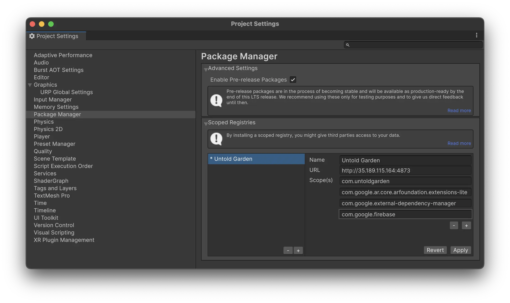
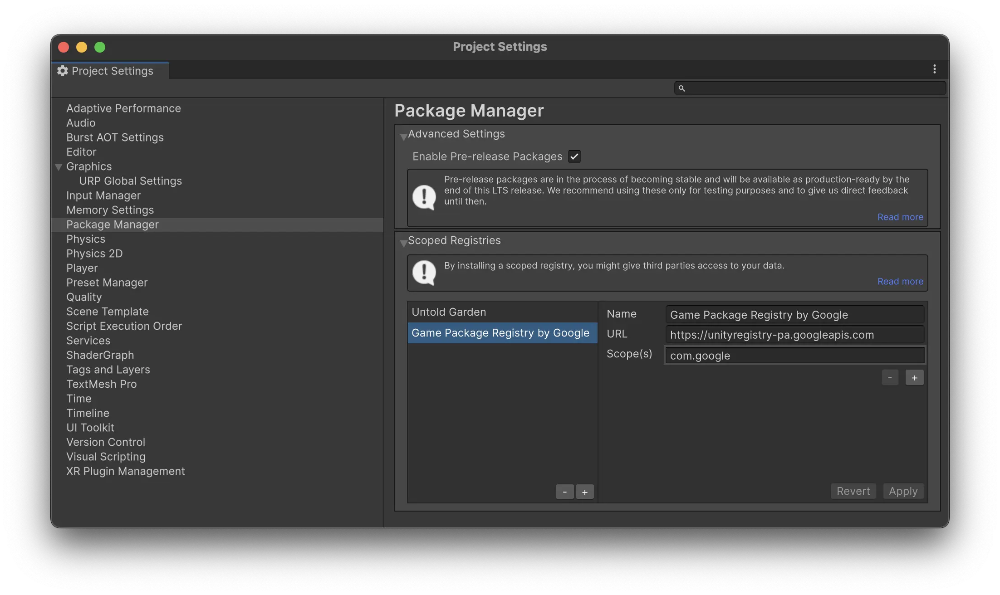
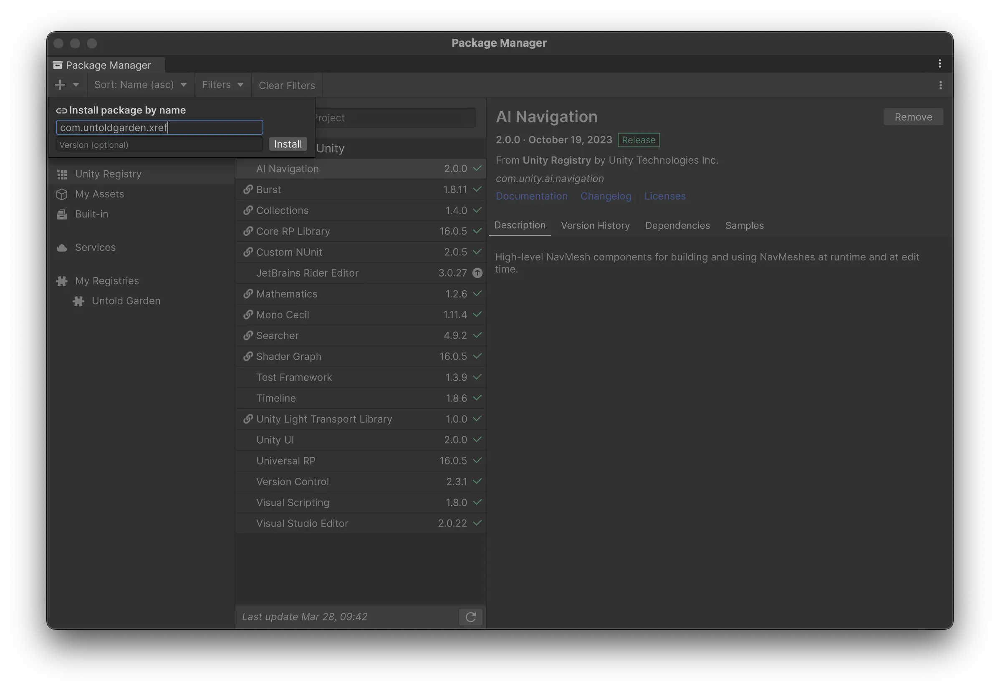
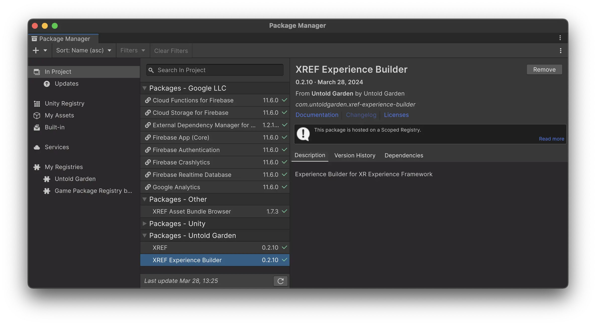

Importing XREF Packages into an Existing Unity Project
This step is not needed if you are using the template project.
You can integrate our packages into an existing Unity project. Our packages are available through a scoped registry, and you can add them directly to your project.
The packages you’ll need are:
- XREF: The Extended Reality Experience Framework, providing the core functionality for creating immersive experiences.
- XREF.ExperienceBuilder: Adds advanced features for creating experiences, including audio interaction, dialogue, and character movement tools.
Adding Packages to Your Project
Add the Scoped Registry
- In Unity, go to
Edit>Project Settings>Package Manager. - Enable the option for
Enable Pre-release Packages. - Add the Untold Garden scoped registry to your project:
- Name:
Untold Garden - URL:
http://35.189.115.164:4873 - Scopes:
com.untoldgardencom.google.ar.core.arfoundation.extensions-litecom.google.external-dependency-managercom.google.firebase
- Name:
- Add the Game Package Registry by Google scoped registry to your project: (This requirement will be removed in a future release.)
- Name:
Game Package Registry by Google - URL:
https://unityregistry-pa.googleapis.com - Scopes:
com.google
- Name:
Add the Packages
- In Unity, go to
Window>Package Managerto open the package manager. - Click the
+button in the top-left corner of the Package Manager.  - Select
Install package by name. - Search for and add the following packages to your project:
- com.untoldgarden.xref
- com.untoldgarden.xref-experience-builder
- You should now see the packages in your list 